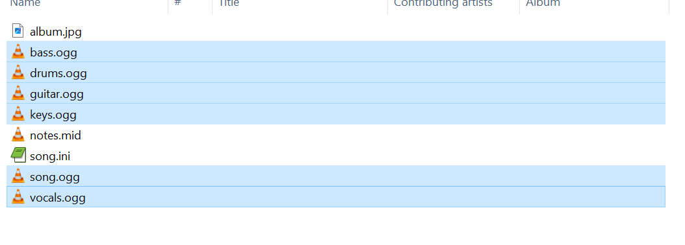
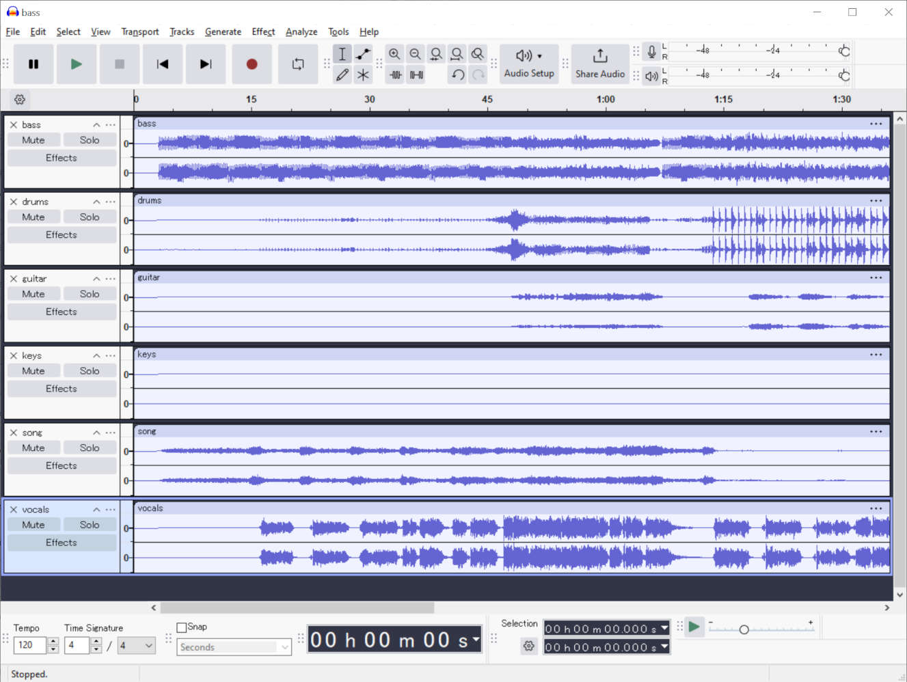
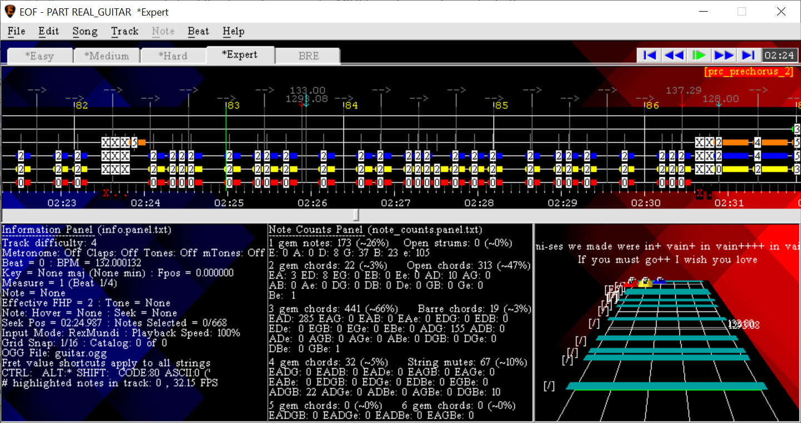

A song editor for "Frets On Fire"
When Rock Band 1 released, it greatly increased the accessiblity of drumming games. Guitar Hero World Tour released soon after and also added drums. Custom content for Rock Band and games similar to it tended to use MIDI files. Custom content for Guitar Hero and games similar to it often used a text based format loosely based on the MIDI file format that was popularized by the "Feedback" chart editor, files of which use a .chart file extension. Playing custom charts in the original Rock Band or Guitar Hero games on the game consoles themselves required special tools and methods, so free and open source rhythm games on PC became popular. One of the oldest of these was Frets on Fire, which was the first game Editor on Fire was able to create content for. As of today, the latest free PC rhythm games are Clone Hero and YARG (Yet Another Rhythm Game), which carry on the tradition of Rock Band style games supporting guitar, bass, vocals, drums, keys/piano, etc. Charts for this type of PC rhythm game generally include either a MIDI format chart called "notes.mid" or a Feedback format chart with a file with a .chart extension, one or more audio files (traditionally OGG vorbis format, but sometimes MP3 or more recently OPUS format), album art and an INI file with metadata.
EOF can import either of these chart formats easily, just open EOF and use File>Import>MIDI for MIDI based charts or File>Import>Feedback for any chart file with a name ending in .chart. There are thousands of existing charts available on sites such as https://www.enchor.us/ and https://rhythmverse.co/. Both of these sites has the ability to filter by instrument so you don't have to look through songs that don't include drum tracks. Browse through the songs or search for specific ones however you like to find one you want to try. Next, these websites offer charts in various formats, but it's easiest to download a specific format type. For Chorus Encore, when you click the download button, you'll want to choose the .zip download format. For RhythmVerse, you'll want to click a download button with the RhythmVerse logo (looks like the multi-color infinity symbol), the Clone Hero logo, the YARG logo or the Phase Shift logo (the other formats are game-specific formats that aren't immediately usable without extra steps). Once the chart is downloaded, you'll usually have a .zip file with one or more audio files, a .mid or .chart file with the note definitions, album art and an INI file with metadata and various details including an audio delay (if any). Go ahead and extract the files somewhere easy to get to. You may find the chart has audio files with a .opus extension, which is getting more popular as a compressed audio format. You can convert these to OGG format or if you want, you can download FFMPEG (https://www.ffmpeg.org/download.html), extract it to a folder and use EOF's "File>Link to>FFMPEG" function, after which EOF will be able to import this audio format among other less common ones.
Back in the old days, the availability of instrument stems was pretty limited, but now it's pretty common for people to use AI models to create simulated stems so you may find that a custom chart has several audio files. If you only see one audio file, you can skip to the next paragraph. Otherwise if you see several with names like guitar.ogg, bass.ogg, drums.ogg, etc, you will need to combine the audio files into a single file so you have the complete audio to use in Smash Drum. An easy way to do this is with the free Audacity audio editor (https://www.audacityteam.org/), which involves opening Audacity, selecting all of the audio files in Windows's File Explorer:

Dragging and dropping them all into Audacity:

Then using Audacity's "File>Export audio" function. Make sure the "Entire project" option is selected, select "Ogg Vorbis Files" as the format, and choose a name and location to save. "song.ogg" is a good general name to use for this, and since EOF would automatically load the guitar.ogg file if it's there when you import the chart in the next step, it may be best to create a new folder for EOF to use for the project, just putting the combined audio file and either the notes.chart or notes.mid file there (depending on which note format the chart came with).
Then once you have one audio file for the chart, in EOF you will use File>Import>MIDI if the chart has a notes.mid file or File>Import>Feedback if the chart has a .chart file. In either case, just browse to the folder where you have the audio and chart file and select the chart file. For MIDI import, if an audio file named guitar.ogg exists in the same folder, EOF will open it automatically. For Feedback import, EOF will open whichever audio file the notes.chart file indicates is correct. If the audio wasn't found and selected automatically, EOF will ask you to select the correct audio file (which should be in the same folder as the chart you chose).
For MIDI import, if you are prompted to import unsupported tracks such as "HARM1" (vocal harmonies) or "PART REAL_KEYS_E" (keyboard/piano arrangement), you can click no for each as they are not relevant for Smash Drums. You may get various warnings/notices that likely won't be a problem as long as the drum content imports and appears to be synchronized with the music. Lastly, due to how EOF has always been designed to work, "mid-beat" tempo changes in MIDI format charts are a complication you may run into depending on how the chart author created the chart. For this reason, the imported beat timings may look messy in some parts as EOF tries to insert new beats to store the offending tempo changes. As a side effect, the notes may appear out of sync with the beat markers even if the notes themselves seem to remain synced with the music. You can manipulate the beat markers to try to re-align them with the notes, but if the notes are in sync with the audio (as tested with clap sound cue) it may just be a cosmetic issue and the arrangement may work perfectly fine in Smash Drums. If you don't like the imported results as they appear in EOF, you can try toggling the "Imports drop mid beat tempos" option in "File>Preferences>Import/Export" and importing the MIDI again. This preference will cause EOF to delete the beat markers it inserted for the sake of storing mid-beat tempo changes during the import.
For the purpose of converting an existing chart for Smash Drums, the sync of the notes is more important than the sync of the beat markers. You can test the sync of the notes by enabling the "clap" sound cue with ("Edit>Claps" or press the C key) and playing back the chart in EOF. The clap sound effect should play at the same times as the notes in the audio are playing. If they are, then you needn't worry about the beat markers unless the exported chart doesn't work as expected in Smash Drums. Otherwise if you encounter problems with the note timing when playing in-game, or if you want to clean up the project to make the tempo map look nicer, you certainly can. Just make sure to go into File>Preferences>Preferences and disable the "Note auto-adjust" option (remember to enable this preference again when you're done with your edits, as it's usually beneficial for chart authoring), because in this case you want to keep the notes where they are and move the beat markers to them instead. EOF will still let you move notes if you click and drag on them so be careful, but you can otherwise move the beat markers to line them up with the notes however you see fit. For example, this import MIDI file is messy in some parts:

The blue downward arrow represents a beat marker that EOF inserted to store a tempo change that occurs away from a beat marker instead of directly on the beat position right next to it. Some of the surrounding notes are consequently not lined up with the beat markers. To make this look nicer, there are at least a few strategies you can use:
1. You can move beats manually with the mouse by clicking and dragging them to have them line up with note positions. Be careful with this method because if you accidentally click and drag on a note instead of a beat marker, EOF will allow you to move the note even if you don't intend to.
2. You can use the PgUp and PgDn keys to seek one beat marker at a time, seek to the position of one you want to make longer or shorter, make sure it is an anchor (either has a tempo change or has a red down arrow, you can press the A key while a beat is selected to toggle its anchor status on or off) and use the - and = keys to adjust the tempo of the last anchor that is at/before the seek position in 1 BPM increments. You can hold SHIFT while using the - and = keys to adjust the tempo in 0.1 BPM increments, or hold CTRL+SHIFT while pressing - and = to adjust in 0.01 BPM increments. To keep the notes from being moved accidentally, you can enable the "Song>Disable click and drag" option when using this strategy since it doesn't necessitate clicking and dragging the beat markers.
3. A faster and more precise way to achieve the results of the above 2 strategies is to use the "Beat>Move to seek pos" function. What this function does is move the currently selected beat marker (the last one you clicked on, which will appear in EOF as < ### > instead of ### or --> ) to the seek position. So you would use SHIFT+PgUp/Dn to seek to the exact position of the note to which you want a nearby beat marker to move, click on the beat marker in question and use "Beat>Move to seek pos" to line the beat up to the note's position. To keep the notes from being moved accidentally, you can also enable the "Song>Disable click and drag" option.
Strategy 3 is probably the best to use to align beats with notes because you can avoid clicking and dragging the notes on accident. If you make a mistake moving a beat, you can undo it with CTRL+Z (Edit>Undo) and try again. After spending a minute or so re-aligning some of the beat markers to the notes and deleting that tiny beat (clicking on the beat marker and using Beat>Delete), the result looks nicer and may be less prone to malfunction or ridicule from other rhythm game chart authors:
Even if the notes all appear to be perfectly in sync and "grid snapped" (aligned with fractions of a beat such as on the beat line, exactly half-way between beats, etc), that may not be the case. EOF has many additional tools (ie. "Song>Highlight non grid snapped notes", "Track>Repair grid snap", "Edit>Grid snap>Display grid lines", see the manual for descriptions of these functions) to help find and correct such issues in case you are a perfectionist (although for the sake of Smash Drums it is likely not necessary). Listen to the chart with metronome enabled (Edit>Metronome, or press the M key) to check the beat sync if you like, but definitely at least spot-check the note timing by listening to the chart playback with clap enabled ("Edit>Claps" or press the C key). Once you are satisfied with the results, proceed to export to Smash Drums format [SMASH DRUMS EXPORT GUIDE]